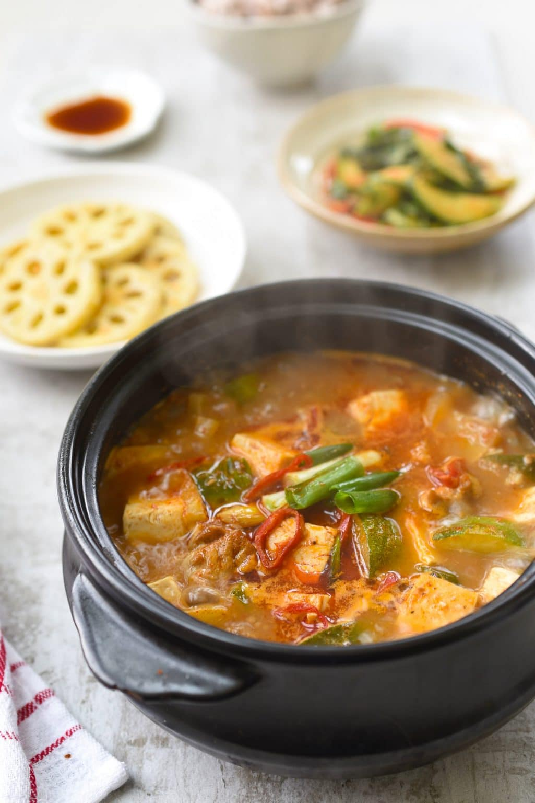

Doenjang jjigae is a staple Korean stew made with doenjang, fermented soybean paste. It is one of the most popular everyday home-cooked Korean dishes. Doenjang.is one of the three primary Korean sauce and pastes, collectively called jang along with ganjang (soy sauce) and gochujang (fermented chili pepper paste). Every Korean home has it all year round. Its deep, rich flavor is created by several months of fermentation and aging.
Depending on the other ingredients added, you can make endless variations of the stew. This recipe is made with fatty pork, but you can also make it with beef or seafood.